Line graphs and pie charts are two of the most common ways to visualize data. You can often find them in newspapers, magazines, and websites.
Line graphs are most useful when you want to show how data changes over time. For example, you might use a line graph to show how a company’s stock price has changed over the past year.
Pie charts are also handy. They are best used when you want to show how a whole is divided into parts. As an example, you might use a pie chart to show how a company’s revenue is divided among different products.
In this tutorial, we will learn how to create line graphs and pie charts in R.
Line Graphs
A line graph (or line chart) is used to display data points connected by a continuous line. As we mentioned above, is especially useful for showing trends over time.
What Does a Line Graph Do?
Shows trends and patterns : It helps visualize how a variable changes over time (e.g., stock prices, temperature changes, sales growth).
Compares multiple data series : You can plot multiple lines to compare different categories or groups.
Identifies peaks and dips : It makes it easy to see the highest and lowest values in a dataset.
Helps in forecasting : By analyzing past trends, a line graph can give insights into possible future patterns.
When to Use a Line Graph?
When data is continuous (e.g., time-based data like months, years, or days).
When you want to track changes over time.
When comparing trends across different categories.
In order to make a line graph in R, you need to make sure the following libraries are loaded up :
dplyr
ggplot2
We will use a combination of ggplot( ) and the geometry function geom_line( ) to create a line graph. the geom_line( ) function connects the data points in the order of the x-axis variable.
Unemployment Rate Example
Let’s take a look at an example of a line graph that shows the unemployment rate over time using the built-in economics dataset in R.
# Load necessary librarieslibrary(ggplot2)library(dplyr)# Load built-in economics datasetdata("economics")# Create a time series line plot of unemployment rateeconomics %>%ggplot(aes(x = date, y = unemploy)) +geom_line(color ="blue") +labs(title ="Unemployment Over Time",x ="Year",y ="Unemployment (in thousands)") +theme_minimal()
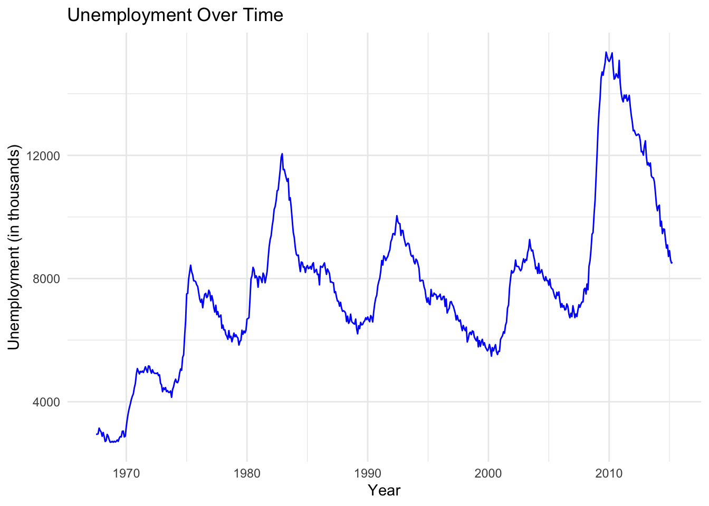
This graph shows the unemployment rate over time. We can see that the rate fluctuates over time, with some periods of high unemployment and some periods of low unemployment. This graph can help us understand how the unemployment rate has changed over time and identify any trends or patterns.
While line graphs are generally used as a way to show trends over time, they can also be used to compare multiple data series. Let’s look at an example of a line graph that compares the price of a diamond to the size (carat) of the diamond.
Diamond Price vs Carat Size Example
Let’s consider the diamonds dataset that comes with the ggplot2 package. This dataset contains information about the price, carat, and cut of diamonds. We will use this dataset to create a line graph that shows the comparison of average price versus carat size.
# Load the librarieslibrary(dplyr)library(ggplot2)# Create a line graph of the average price of diamonds over time# Aggregate data: Get the average price for each carat sizeavg_price_per_carat <-aggregate(price ~ carat, data = diamonds, FUN = mean)# Create the line graphggplot(avg_price_per_carat, aes(x = carat, y = price)) +geom_line(color ="blue", linewidth =1) +labs(title ="Diamond Price vs. Carat Size",x ="Carat Size",y ="Average Price (USD)") +theme_minimal()
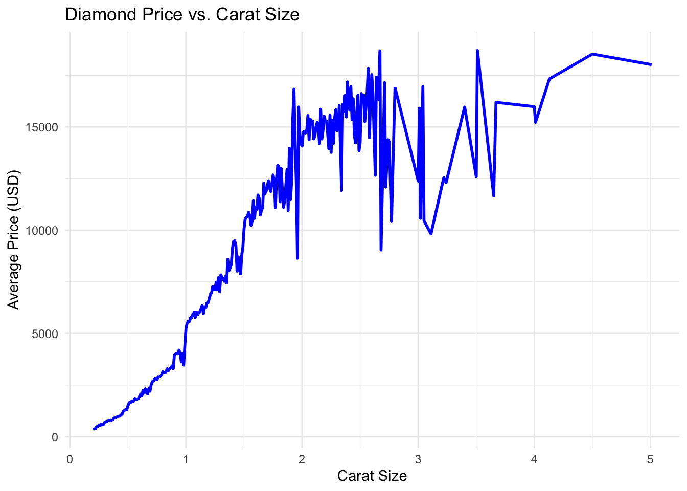
While certainly not a surprise, we can interpret from this graph that as the number of carats in the diamond increases, the price of the diamond also increases. It is curious as to why there is a dip in the price of diamonds of size around 3 carats. This could be due to a variety of factors such as the quality of the diamond, the cut, or the color.
Let’s walk through some examples of how we can think about how to create line graphs. Try to follow along by creating the graphs in your R console.
Basic Line Graph
Objective: Create a basic line graph using ggplot2.
Instructions:
Load the ggplot2 library.
Create a simple data frame with two columns: year (from 2000 to 2020) and value (random numbers).
Use ggplot to create a line graph where the x-axis represents the year and the y-axis represents the value.
Example:
library(ggplot2)# Create data framedf <-data.frame(year =2000:2020,value =runif(21, min =0, max =100))# Create line graphggplot(df, aes(x = year, y = value)) +geom_line()
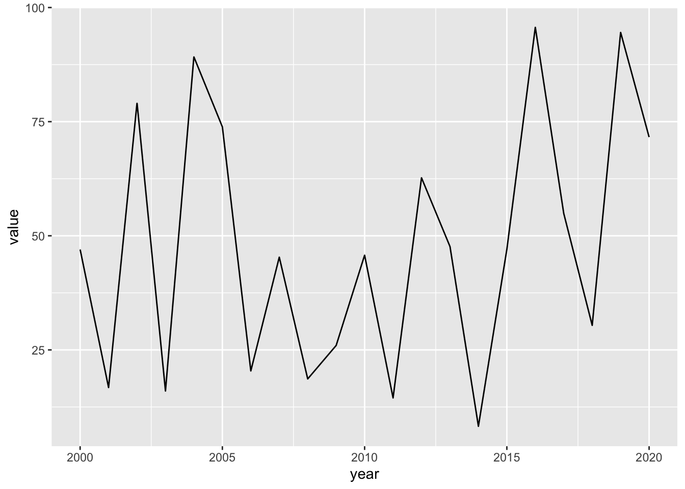
Adding Titles and Labels
Objective: Enhance the basic line graph by adding titles and axis labels.
Instructions:
Add a main title, x-axis label, and y-axis label to the line graph.
Example:
ggplot(df, aes(x = year, y = value)) +geom_line() +ggtitle("Value Over Years") +xlab("Year") +ylab("Value")
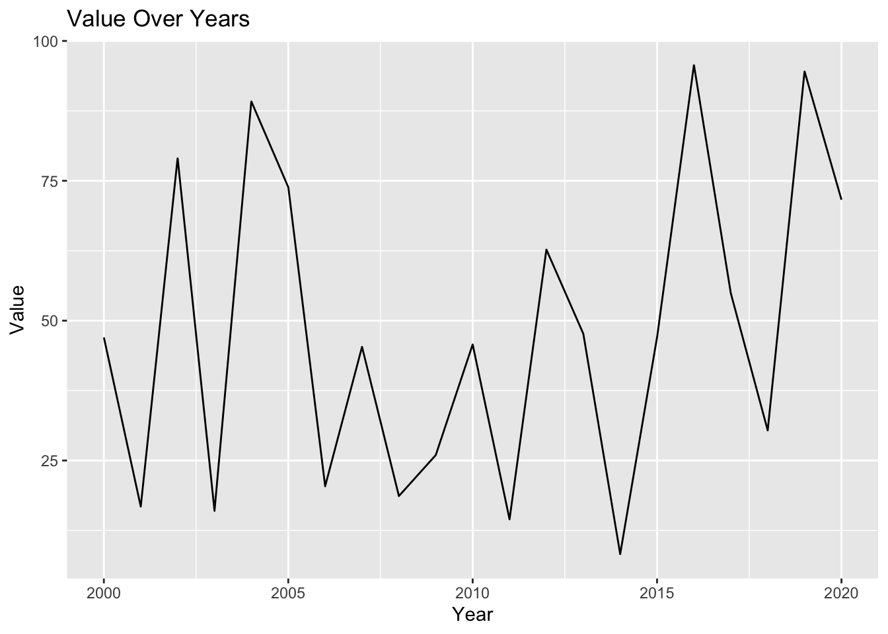
Styling the Line
Objective: Customize the appearance of the line in the graph.
Instructions:
Change the line color to blue and make it thicker.
Example:
ggplot(df, aes(x = year, y = value)) +geom_line(color ="blue", size =1.5) +ggtitle("Value Over Years") +xlab("Year") +ylab("Value")
Warning: Using `size` aesthetic for lines was deprecated in ggplot2 3.4.0.
ℹ Please use `linewidth` instead.
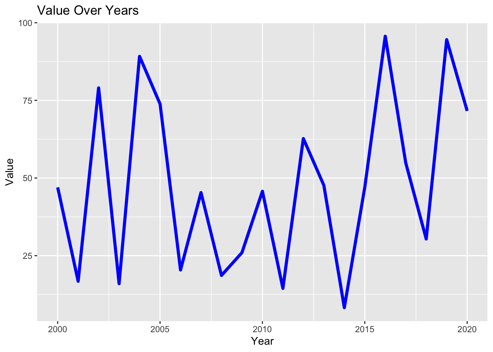
Adding Points to the Line Graph
Objective: Add points to highlight data values on the line graph.
Instructions:
Add points on top of the line graph to indicate the actual data values.
Example:
ggplot(df, aes(x = year, y = value)) +geom_line(color ="blue", size =1.5) +geom_point(color ="red", size =3) +ggtitle("Value Over Years") +xlab("Year") +ylab("Value")
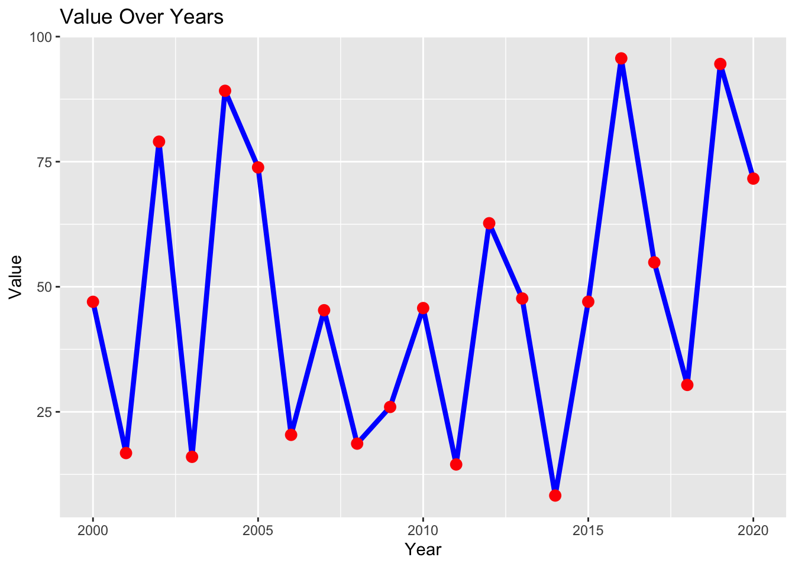
Faceting the Line Graph
Objective: Create multiple line graphs using faceting.
Instructions:
Create a new data frame with three columns: year (from 2000 to 2020), value (random numbers), and category (categorical variable with two levels: “A” and “B”).
Use ggplot to create a line graph with facets for each category.
Example:
# Create data frame with categoriesdf <-data.frame(year =rep(2000:2020, 2),value =runif(42, min =0, max =100),category =rep(c("A", "B"), each =21))# Create faceted line graphggplot(df, aes(x = year, y = value, color = category)) +geom_line() +facet_wrap(~ category) +ggtitle("Value Over Years by Category") +xlab("Year") +ylab("Value")
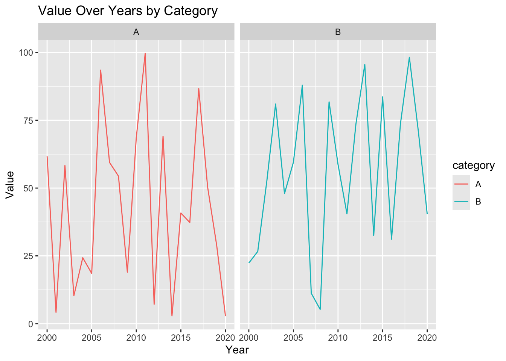
Now that we have seen a few examples of how to create a line graph, let’s turn our attention towards pie charts.
Pie Charts
A pie chart is a circular statistical graphic that is divided into slices to illustrate numerical proportions. The size of each slice is proportional to the quantity it represents. Pie charts are useful for showing the relative proportions of different categories or groups in a dataset.
There are several different ways on could make a pie chart. While we will use the traditinoal version of a pie chart, there are several pretty cool methods you could use to present the data is a more circularish way. You can check them out at the following link :
Shows proportions : It helps visualize the distribution of data across different categories.
Compares parts to the whole : It shows how each category contributes to the total.
Highlights differences : It makes it easy to see which categories are larger or smaller.
Simplifies complex data : It presents data in a simple and easy-to-understand format.
When to Use a Pie Chart?
When you want to show the relative proportions of different categories.
When you want to compare parts to the whole.
When you have a small number of categories (3-7) to display.
Unfortunatley ggplot2 doesn’t have a dedicated geometry for pie charts; instead, you create them by transforming a stacked bar chart using coord_polar( ).
Here’s how you can achieve this:
Pie charts are essentially stacked bar charts viewed in polar coordinates. You can follow these steps to create a pie chart in ggplot2:
Use geom_bar( ) or geom_col( ) to create the stacked bar chart, mapping your data to the y aesthetic (for the bar heights) and fill aesthetic (for the colors of the slices).
Use coord_polar( ) to transform the rectangular bar chart into a circular pie chart.
You can customize the pie chart further by adjusting the colors, labels, and other aesthetics using ggplot2’s various functions.
Diamonds Pie Chart Example
Let’s create a pie chart that shows the distribution of diamond cuts (Fair, Good, Very Good, Premium, Ideal)in the diamonds dataset.
Let’s first take a quick look at the data set by using the count( ) function to get the number of diamonds for each cut.
diamonds %>%count(cut)
# A tibble: 5 × 2
cut n
<ord> <int>
1 Fair 1610
2 Good 4906
3 Very Good 12082
4 Premium 13791
5 Ideal 21551
This output creates a table that has two columns: cut and n. The cut column contains the different types of diamond cuts, and the n column contains the number of diamonds for each cut. Notice that we did not save this output to a different variable. We could do this, but it is not needed if we are going to simply pipe this output to the next step of the process.
At this point we could make a normal bar chart as follows :
diamonds %>%count(cut) %>%ggplot(aes(x = cut, y = n, fill = cut)) +geom_bar(stat ="identity", width =1) +labs(title ="Distribution of Diamond Cuts",fill ="Cut") +theme_minimal() +theme(legend.position ="right")
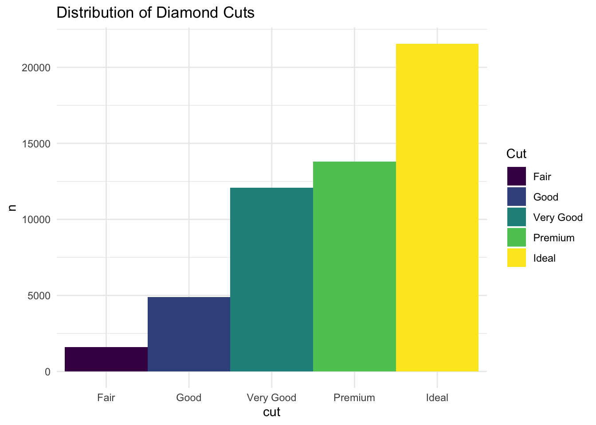
What we want is a stacked bar chart, so we don’t want the x-axis to be the cut of the diamond. Instead, we want the x-axis to be an empty string (x = ""). This will create a bar chart with only one bar. We will take this output and create a stacked barplot of the distribution of diamond cuts using another pipe and sending the output to ggplot and then to geom_bar. We finish off the bar chart by adding some labels, fills, and a theme.
diamonds %>%count(cut) %>%ggplot(aes(x ="", y = n, fill = cut)) +# geom_bar(stat = "identity", width = 1) +geom_col() +labs(title ="Distribution of Diamond Cuts",fill ="Cut") +theme_minimal() +theme(legend.position ="right")
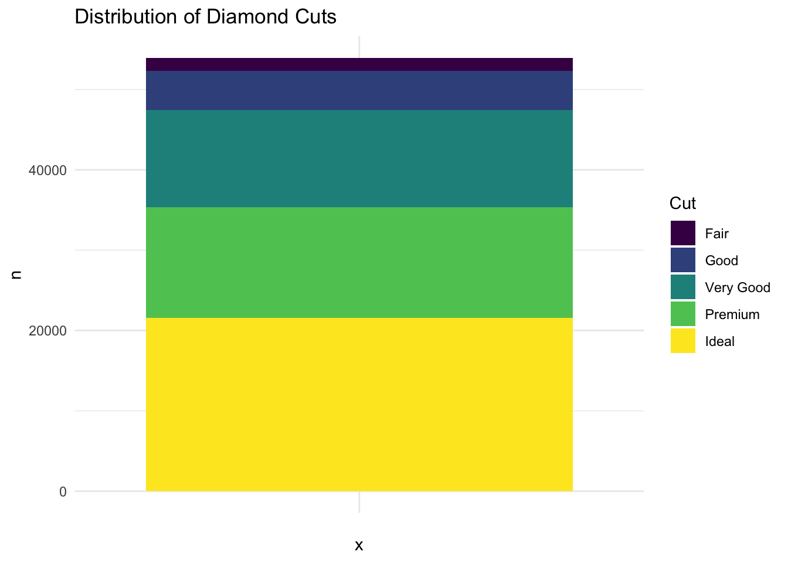
We are now ready to turn this into a Pie Chart! By adding the coord_polar function, we transform the bar chart into a pie chart.
Here is the code to create a pie chart of the distribution of diamond cuts:
# Load necessary librarieslibrary(ggplot2)library(dplyr)# Create a pie chart of the distribution of diamond cuts# We will create the bar chart as we did above, but this time we will use# coord_polar to make it circular.# Lastly we will add some labels and some colors# The fill color is the cut of the diamond and the sizes of the pieces of the # pie are based on the number of diamondsdiamonds %>%count(cut) %>%ggplot(aes(x ="", y = n, fill = cut)) +geom_bar(stat ="identity", width =1) +coord_polar(theta ="y") +labs(title ="Distribution of Diamond Cuts",fill ="Cut") +theme_minimal() +theme(legend.position ="right")
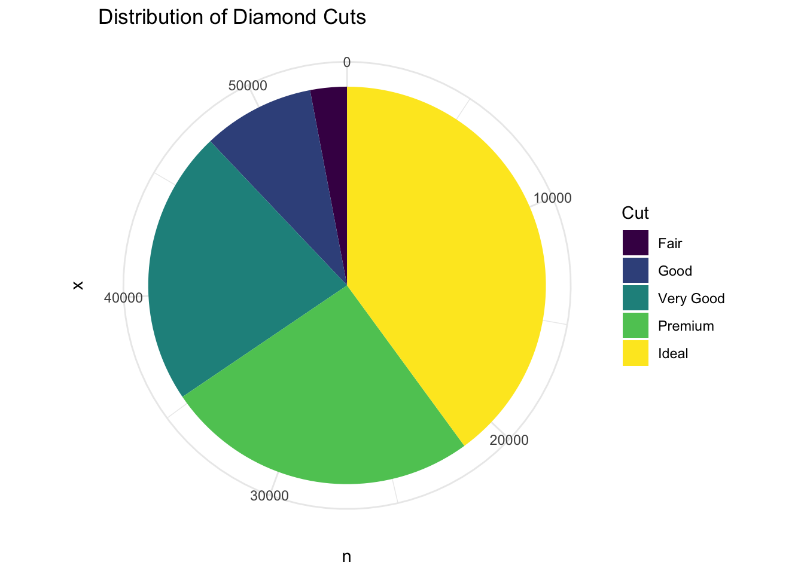
Cars by Cylinder Pie Chart Example
Let’s look at one more example by revisiting the mtcars dataset. We will create a pie chart that shows the distribution of car models by the number of cylinders.
# Load necessary librarieslibrary(ggplot2)library(dplyr)# load the mtcars data setdata("mtcars")# Create a pie chart of the Count of car models by number of cylinders. # We will use the count function to get the number of cars for each # combination of model and cylinders# We will then use ggplot to create the pie chart by making a bar plot and# using coord_polar to make it circular# Lastly we will add some labels and some colors where the fill color is the # number of cylindersmtcars %>%count(cyl) %>%ggplot(aes(x="", y=n, fill=factor(cyl))) +geom_bar(stat="identity", width=1) +coord_polar("y") +geom_text(aes(label = n),position =position_stack(vjust =0.5),color ="white", size =5) +labs(title="Count of Cars by Cylinder",fill="Cylinders")
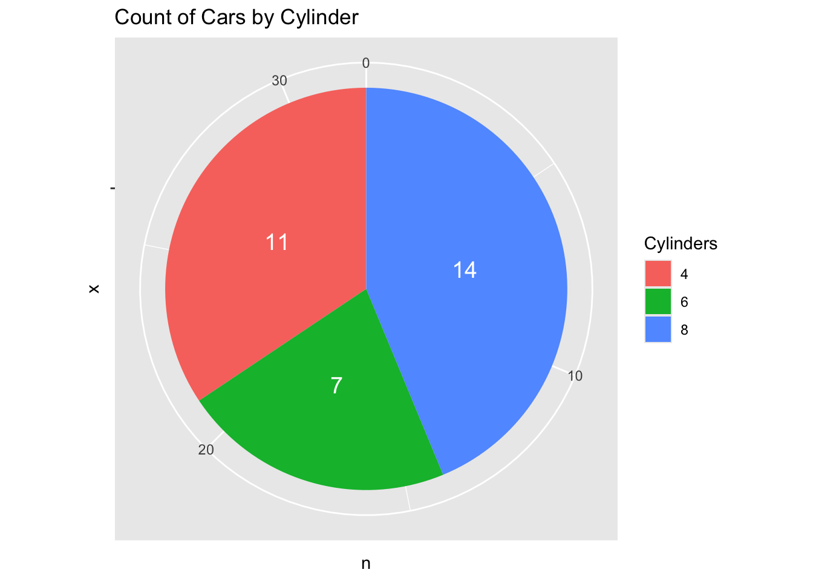
Note that we can remove that “outer ring” by adding theme_void( ) to the end of the code. This will remove the axis labels and the grid lines.
As we did with the last Line Graph example, let’s walk through some ideas on how to create a pie chart.
Basic Pie Chart
Task: Create a basic pie chart using the ggplot2 library in R.
Steps:
Install and load the ggplot2 library.
Create a simple data frame with two columns: category and value.
Use ggplot2 to create a pie chart from the data frame.
Solution:
# Install and load ggplot2# install.packages("ggplot2")library(ggplot2)# Create data framedata <-data.frame(category =c("A", "B", "C", "D"),value =c(10, 20, 30, 40))# Create pie chartggplot(data, aes(x ="", y = value, fill = category)) +geom_bar(stat ="identity", width =1) +coord_polar(theta ="y") +theme_void()
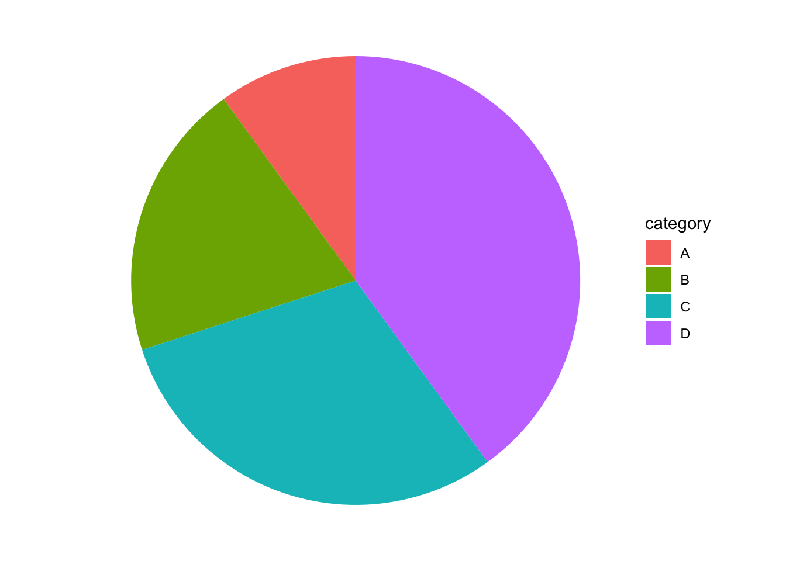
Adding Labels to the Pie Chart
Task: Add labels to the pie chart to show the percentage of each category.
Steps:
Modify the data frame to include percentage calculations.
Add labels to the pie chart using geom_text.
Solution:
# Create data frame with percentagedata <-data.frame(category =c("A", "B", "C", "D"),value =c(10, 20, 30, 40))data$percentage <-round(data$value /sum(data$value) *100, 1)# Create pie chart with labelsggplot(data, aes(x ="", y = value, fill = category)) +geom_bar(stat ="identity", width =1) +coord_polar(theta ="y") +geom_text(aes(label =paste0(percentage, "%")), position =position_stack(vjust =0.5)) +theme_void()
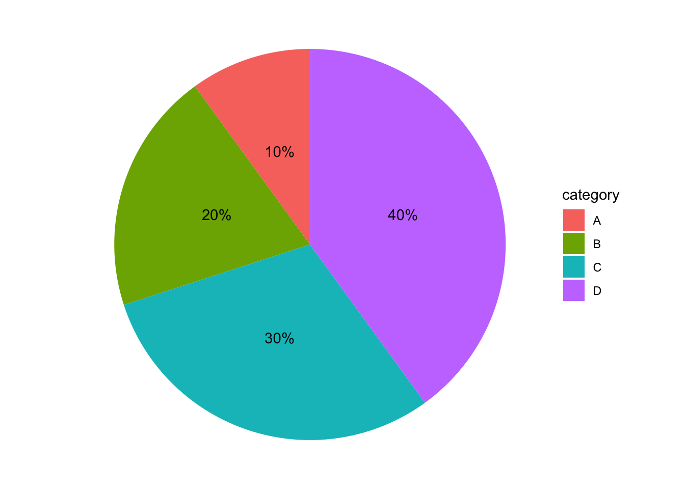
Customizing Colors
Task: Customize the colors of the pie chart slices.
Steps:
Choose a color palette.
Apply the color palette to the pie chart using scale_fill_manual.
Solution:
# Create data frame with percentagedata <-data.frame(category =c("A", "B", "C", "D"),value =c(10, 20, 30, 40))# Custom colorscolors <-c("A"="red", "B"="blue", "C"="green", "D"="purple")# Create pie chart with custom colorsggplot(data, aes(x ="", y = value, fill = category)) +geom_bar(stat ="identity", width =1) +coord_polar(theta ="y") +scale_fill_manual(values = colors) +theme_void()
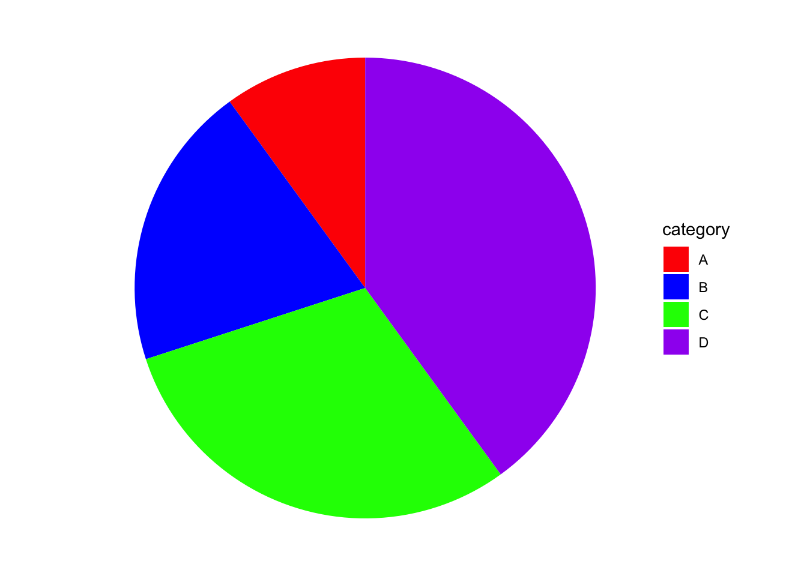
Adding a Title and Legend
Task: Add a title and customize the legend of the pie chart.
Steps:
Use ggtitle to add a title to the pie chart.
Customize the legend using theme.
Solution:
# Create data frame with percentagedata <-data.frame(category =c("A", "B", "C", "D"),value =c(10, 20, 30, 40))# Create pie chart with title and legendggplot(data, aes(x ="", y = value, fill = category)) +geom_bar(stat ="identity", width =1) +coord_polar(theta ="y") +ggtitle("Pie Chart Example") +theme_void() +theme(legend.position ="bottom")
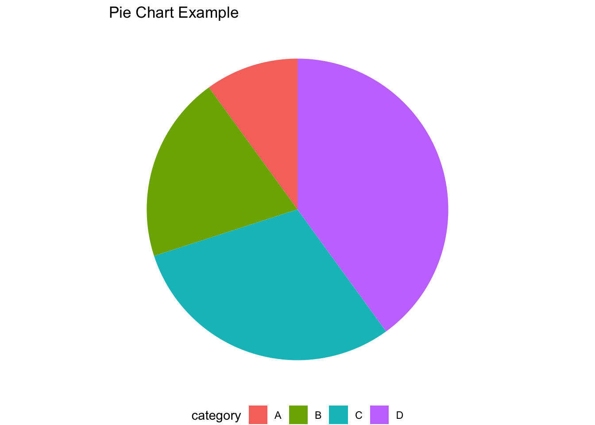
Exercises
In this assignment, you will create line graphs and pie charts using the ggplot2 library in R. You will use built-in datasets from RStudio to visualize different types of data. Ensure you follow the instructions for each problem carefully.
Problem 1: Line Graph of pressure Dataset
Task: Create a line graph of the pressure dataset, which shows the relationship between temperature and pressure.
Steps:
Load the ggplot2 library.
Use the pressure dataset.
Create a line graph with temperature on the x-axis and pressure on the y-axis.
Add appropriate labels to the axes and a title to the graph.
Solution:
Code
# Load ggplot2 librarylibrary(ggplot2)# Create line graphggplot(pressure, aes(x = temperature, y = pressure)) +geom_line() +labs(title ="Temperature vs Pressure",x ="Temperature",y ="Pressure")
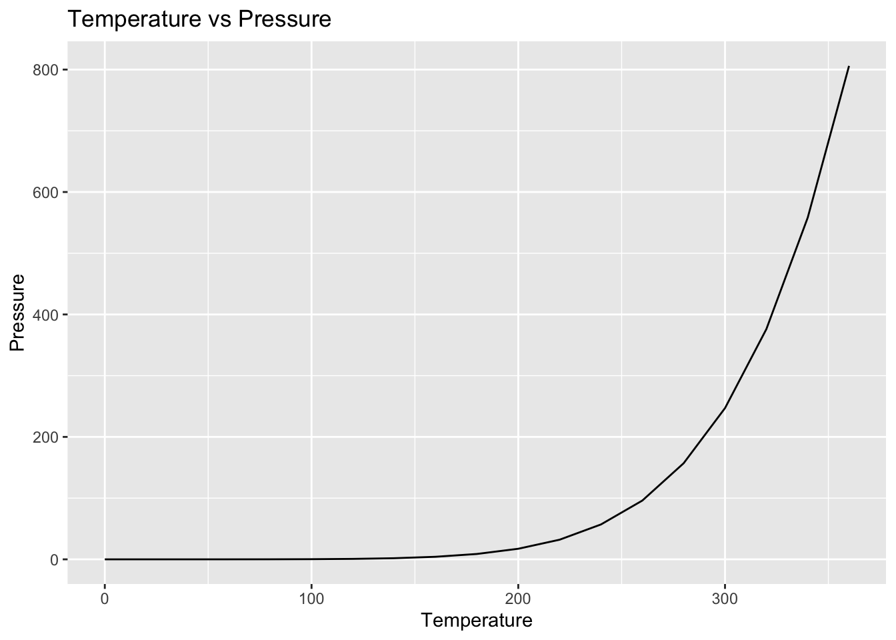
Problem 2: Line Graph of AirPassengers Dataset
Task: Create a line graph of the AirPassengers dataset, which shows the number of air passengers over time.
Steps:
Load the ggplot2 library.
Use the AirPassengers dataset.
Convert the AirPassengers time series object to a data frame.
Create a line graph with time on the x-axis and the number of passengers on the y-axis.
Add appropriate labels to the axes and a title to the graph.
Solution:
Code
# Load ggplot2 librarylibrary(ggplot2)# Convert AirPassengers to data frameairpassengers_df <-data.frame(time =time(AirPassengers),passengers =as.numeric(AirPassengers))# Create line graphggplot(airpassengers_df, aes(x = time, y = passengers)) +geom_line() +labs(title ="Number of Air Passengers Over Time",x ="Time",y ="Number of Passengers")
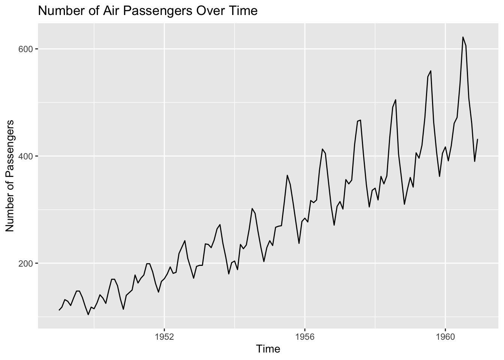
Problem 3: Line Graph of lynx Dataset
Task: Create a line graph of the lynx dataset, which shows the annual numbers of lynx trappings from 1821–1934 in Canada.
Steps:
Load the ggplot2 library.
Use the lynx dataset.
Convert the lynx time series object to a data frame.
Create a line graph with time on the x-axis and the number of lynx trapped on the y-axis.
Add appropriate labels to the axes and a title to the graph.
Solution:
Code
# Load ggplot2 librarylibrary(ggplot2)# Convert lynx to data framelynx_df <-data.frame(year =time(lynx),trappings =as.numeric(lynx))# Create line graphggplot(lynx_df, aes(x = year, y = trappings)) +geom_line() +labs(title ="Annual Numbers of Lynx Trappings",x ="Year",y ="Number of Lynx Trapped")
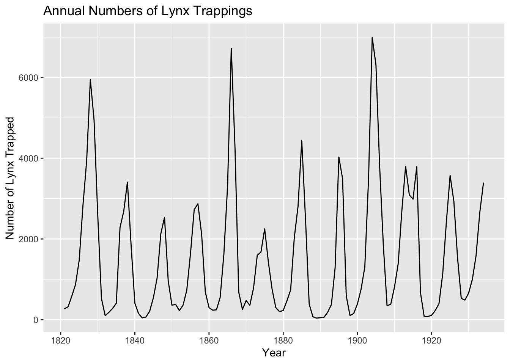
Problem 4: Line Graph of economics Dataset
Task: Create a line graph of the economics dataset, which shows the unemployment rate over time.
Steps:
Load the ggplot2 library.
Use the economics dataset.
Create a line graph with date on the x-axis and unemployment rate (unemploy/pop * 100) on the y-axis.
Add appropriate labels to the axes and a title to the graph.
Solution:
Code
# Load ggplot2 librarylibrary(ggplot2)# Create line graphggplot(economics, aes(x = date, y = unemploy / pop *100)) +geom_line() +labs(title ="Unemployment Rate Over Time",x ="Date",y ="Unemployment Rate (%)")
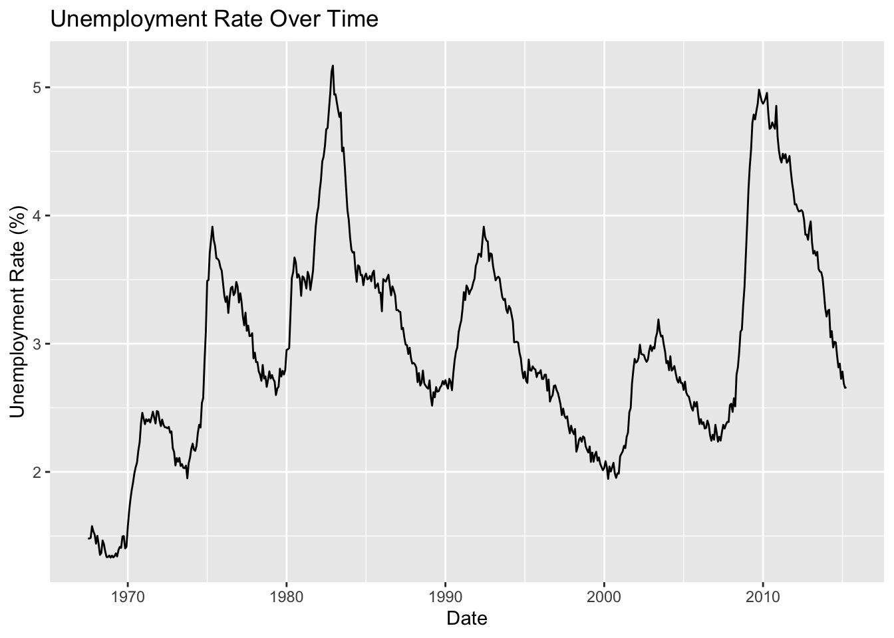
Problem 5: Line Graph of co2 Dataset
Task: Create a line graph of the co2 dataset, which shows the concentration of atmospheric carbon dioxide over time.
Steps:
Load the ggplot2 library.
Use the co2 dataset.
Convert the co2 time series object to a data frame.
Create a line graph with time on the x-axis and CO2 concentration on the y-axis.
Add appropriate labels to the axes and a title to the graph.
Solution:
Code
# Load ggplot2 librarylibrary(ggplot2)# Convert co2 to data frameco2_df <-data.frame(time =time(co2),concentration =as.numeric(co2))# Create line graphggplot(co2_df, aes(x = time, y = concentration)) +geom_line() +labs(title ="Atmospheric CO2 Concentration Over Time",x ="Time",y ="CO2 Concentration (ppm)")
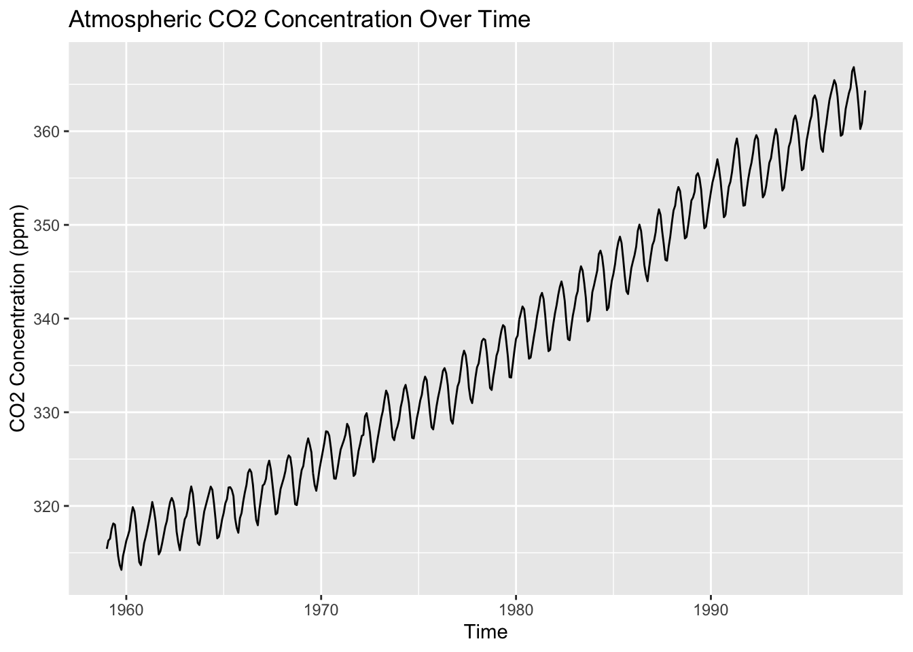
Problem 6: Pie Chart of Species Distribution in the Iris Dataset
Objective: Create a pie chart to visualize the distribution of different species in the Iris dataset.
Steps:
Load the ggplot2 library.
Use the built-in iris dataset.
Create a data frame that counts the number of occurrences of each species.
Use ggplot2 to create a pie chart displaying the species distribution.
Hints: - Use table to count the occurrences of each species. - Use geom_bar and coord_polar to create the pie chart.
Solution:
Code
# Load ggplot2library(ggplot2)# Load iris datasetdata(iris)# Count species occurrencesspecies_count <-as.data.frame(table(iris$Species))# Create pie chartggplot(species_count, aes(x ="", y = Freq, fill = Var1)) +geom_bar(stat ="identity", width =1) +coord_polar(theta ="y") +geom_text(aes(label = Freq),position =position_stack(vjust =0.5),color ="white", size =5) +theme_void() +ggtitle("Distribution of Species in the Iris Dataset") +labs(fill ="Species")
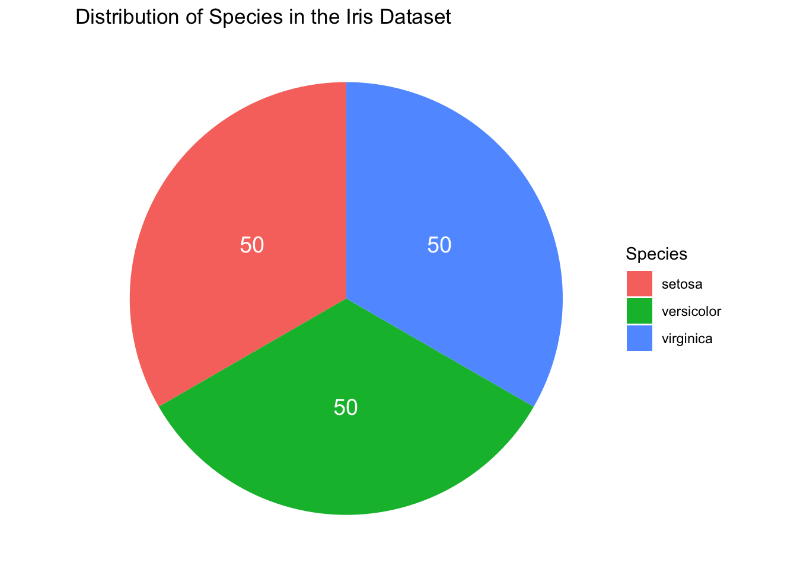
Problem 7: Pie Chart of Gear Distribution in the Cars Dataset
Objective: Create a pie chart to visualize the distribution of different gears in the cars dataset.
Steps:
Load the ggplot2 library.
Use the built-in cars dataset.
Create a data frame that counts the number of occurrences of each gear type.
Use ggplot2 to create a pie chart displaying the gear distribution.
Hints: - Use table to count the occurrences of each gear type. - Use geom_bar and coord_polar to create the pie chart.
Solution:
Code
# Load ggplot2library(ggplot2)# Load cars datasetdata(mtcars)# Count gear occurrencesgear_count <-as.data.frame(table(mtcars$gear))# Create pie chartggplot(gear_count, aes(x ="", y = Freq, fill = Var1)) +geom_bar(stat ="identity", width =1) +coord_polar(theta ="y") +geom_text(aes(label = Freq),position =position_stack(vjust =0.5),color ="white", size =5) +theme_void() +ggtitle("Distribution of Gears in the Cars Dataset") +labs(fill ="Gears")
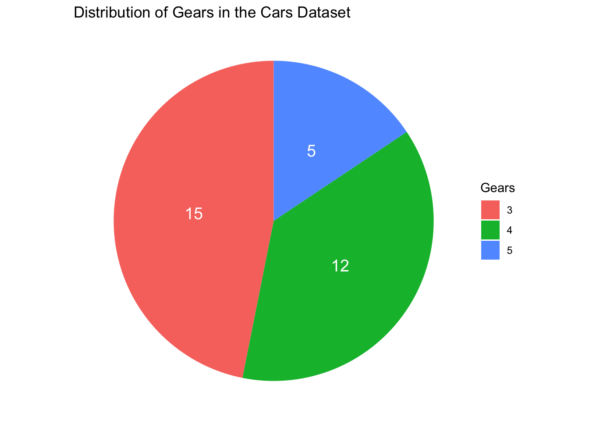
Problem 8: Pie Chart of Titanic Class Distribution in the Titanic Dataset
Objective: Create a pie chart to visualize the distribution of different classes in the Titanic dataset.
Steps:
Load the ggplot2 library.
Use the built-in Titanic dataset.
Create a data frame that counts the number of occurrences of each class.
Use ggplot2 to create a pie chart displaying the class distribution.
Hints: - Use table to count the occurrences of each class. - Use geom_bar and coord_polar to create the pie chart.
Solution:
Code
# Load ggplot2library(ggplot2)# Load Titanic datasetdata(Titanic)# Convert Titanic dataset to data frametitanic_df <-as.data.frame(Titanic)# Count class occurrencesclass_count <-as.data.frame(table(titanic_df$Class))# Create pie chartggplot(class_count, aes(x ="", y = Freq, fill = Var1)) +geom_bar(stat ="identity", width =1) +coord_polar(theta ="y") +theme_void() +ggtitle("Distribution of Classes in the Titanic Dataset") +labs(fill ="Class")
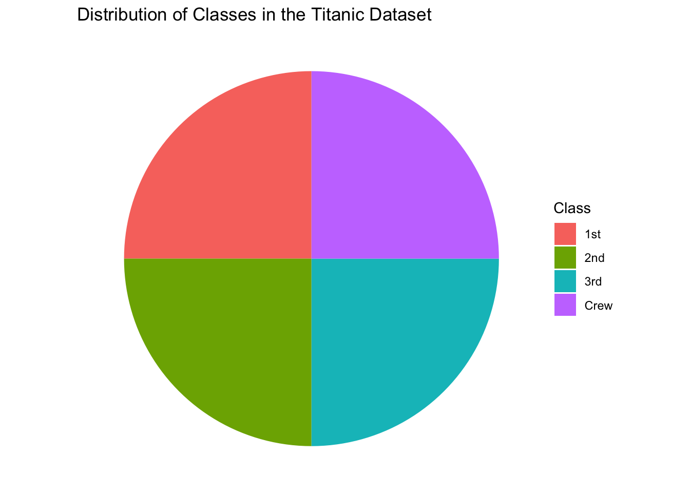
Problem 9: Pie Chart of Supplement Distribution in the ToothGrowth Dataset
Task: Create a pie chart to show the distribution of the different supplements (VC and OJ) in the ToothGrowth dataset.
Steps:
Load the ggplot2 library and the ToothGrowth dataset.
Create a data frame that summarizes the count of each supplement type.
Use ggplot2 to create a pie chart that shows the proportion of each supplement.
Hint: Use the fill aesthetic to map the supp column to the pie chart slices.
Solution:
Code
# Load ggplot2 and ToothGrowth datasetlibrary(ggplot2)data(ToothGrowth)# Summarize count of each supplement typesupp_count <-as.data.frame(table(ToothGrowth$supp))# Create pie chartggplot(supp_count, aes(x ="", y = Freq, fill = Var1)) +geom_bar(stat ="identity", width =1) +coord_polar(theta ="y") +labs(title ="Supplement Distribution in ToothGrowth Dataset", fill ="Supplement") +theme_void()
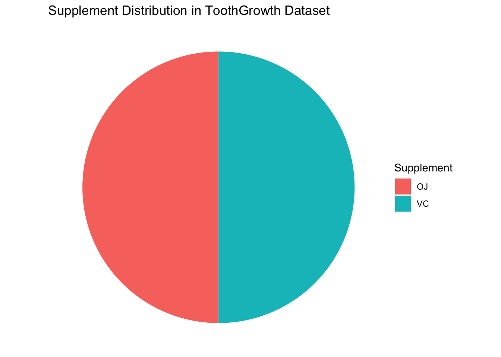
Problem 10: Pie Chart of Education Levels in the infert Dataset
Task: Create a pie chart to show the distribution of different education levels in the infert dataset.
Steps:
Load the ggplot2 library and the infert dataset.
Create a data frame that summarizes the count of each education level.
Use ggplot2 to create a pie chart that shows the proportion of each education level.
Hint: Use the fill aesthetic to map the education column to the pie chart slices.
Solution:
Code
# Load ggplot2 and infert datasetlibrary(ggplot2)data(infert)# Summarize count of each education leveleducation_count <-as.data.frame(table(infert$education))# Create pie chartggplot(education_count, aes(x ="", y = Freq, fill = Var1)) +geom_bar(stat ="identity", width =1) +coord_polar(theta ="y") +geom_text(aes(label = Freq),position =position_stack(vjust =0.5),color ="white", size =5) +labs(title ="Education Levels in Infert Dataset", fill ="Education Level") +theme_void()
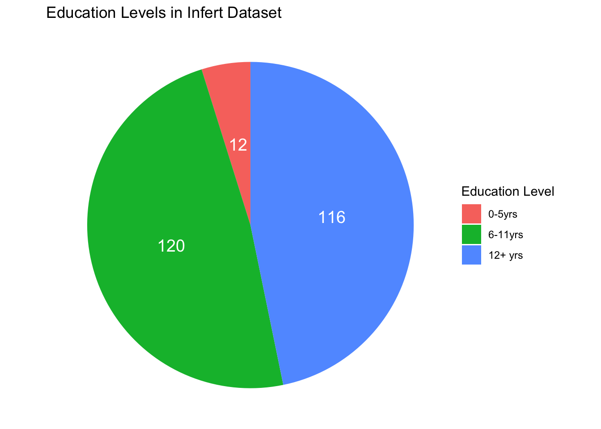
Conclusion
In this tutorial, we learned how to create line graphs and pie charts in R using the ggplot2 package. Line graphs are useful for showing trends over time and comparing multiple data series, while pie charts are useful for showing the relative proportions of different categories. By using ggplot2, we can create high-quality visualizations that help us understand and communicate data more effectively. I hope you found this tutorial helpful and that you can now create your own line graphs and pie charts in R. Thank you for reading!